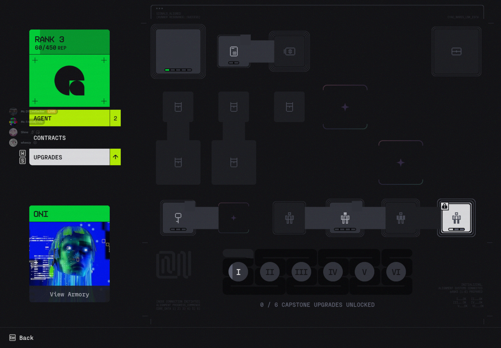

Materials0
Starting Total0
Total Left0
How many more materials do I need?
To report a bug send an email of the issue to marathongodsheet@gmail.com
Raw Total of Materials — Locked Reference
Faction Tree
Cyberacme
0 / 0 nodes started

Instructions
Welcome to Marathon Godsheet. This site helps you track faction upgrade progress, see how many materials you still need, and record materials you already have in your vault.
- Start on Upgrade Tracking. Pick a faction on the left, then click the nodes on the tree to mark the tier you currently own.
- Use quick node controls. Left click a node to increase its tier. Right click a node to decrease its tier. You can also click a node and use the popup to choose the exact tier.
- Watch totals update automatically. When a node has known material costs, the website updates the raw totals, dashboard totals, and Materials Left table for the selected tier. Higher tiers include the costs of required earlier tiers.
- Use the faction buttons if needed. Set Faction to Max is useful for testing. Reset This Faction clears only the active faction. Reset All Factions clears all faction upgrade selections. Undo Last Action reverses your most recent change.
- Check the Dashboard tab. The Dashboard shows your material totals and the How many more materials do I need? table. This is the fastest place to see what you are still missing.
- Use Cataloging to manage your vault. The Raw Total of Materials section is a locked reference list and cannot be changed by users. Only site/backend updates change those raw totals. In In Vault, add or remove materials you have saved in your vault.
- Vault materials are used first. If a selected upgrade needs a material that is in your vault, the site will spend the vault amount first before subtracting from your remaining totals.
- Your progress saves automatically. The site remembers your totals, vault, selected upgrades, and last tab using your browser storage, so you can close and reopen it without losing progress.
Tip: Credits are ignored for material tracking, so credits-only sponsorship upgrades will not affect the material totals.